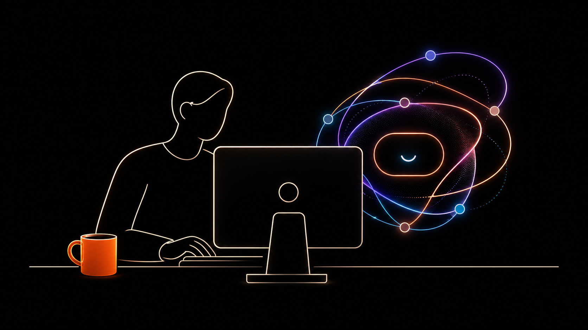
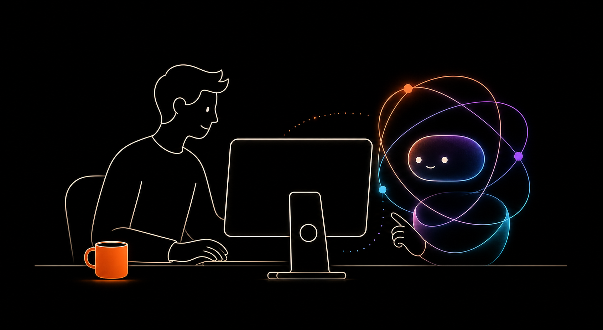
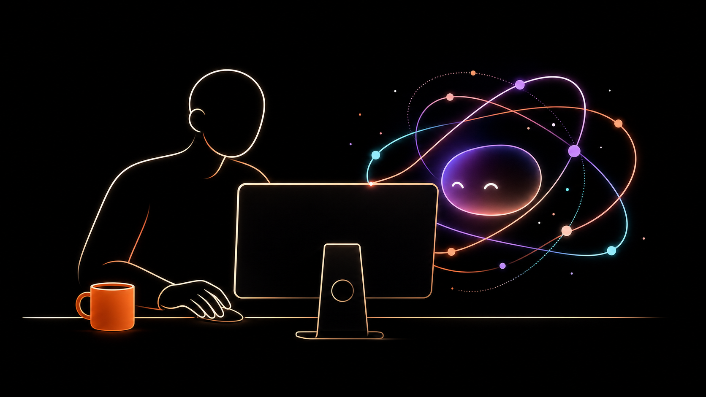

Abstract Concept A
Loop Partner
Recommended

A cleaner direction for replacing the literal robot coworker with more abstract human + AI collaboration imagery. Each option keeps the black Curyo field, desktop computer, orange coffee mug, and orbit colors, but reduces anatomy and robot details so the image feels more brand-ownable.



Generate the full scene as one image, but avoid literal character design. Ask for a partial human contour, hands at the work surface, a desktop monitor with stand, an orange mug, and an AI presence made from an orbital capsule, nodes, and soft glow.
The key negative prompts are no laptop, no literal robot body,
no detailed face, no oversized hair, no text, and
black background.
Start from Concept A if the homepage needs a clear product story. Start from Concept C if the brand should lean more premium and symbolic. In either case, edit one thing at a time: crop, AI shape, then hand position.